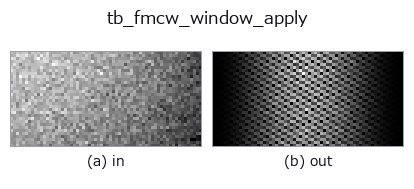

typed op• データ種: beatcube → beatcube
• 呼び出し: fullseye.apply(img, "tb_fmcw_window_apply", a=0.5, b=0.5) (2-D は 1 画像 + 2 スカラつまみ a,b∈[0,1] のモデル)

*図は合成の入力 128×128 で実際に走らせた出力。左が入力、右が出力。点群は上から見た散布(明るさ = z)、1-D 列は折れ線、体積は z 方向の最大値投影、動画は中央フレーム、複素画像は振幅、絵にならない返り値は値そのもの。*
*つまみ a は出力を変えない(実測: 0.1 / 0.5 / 0.9 で同一)。*
*つまみ b は出力を変えない(実測: 0.1 / 0.5 / 0.9 で同一)。*
段階(前置きの op → この op。左から順):
▸ tb_fmcw_window_apply: stages (docs site)
別の画像でも(合成シーン / 写真 / 硬貨。上段が入力、下段がその出力。つまみは既定):
▸ tb_fmcw_window_apply: other inputs (docs site)
ビートキューブ（beat cube）のレンジ軸および／またはドップラー軸に沿って周期的な窓関数を適用する。
> 以下の詳細説明は原文のままです —— 要約と見出しは訳出済み。
The sidelobes of a rectangular (unwindowed) transform are -13.3 dB, so a
strong target buries a weak one 20 dB down at a completely different range.
Windowing trades main-lobe width for sidelobe level; the published figures
(Harris 1978, Table 1) and the levels measured in this repository on a
single bin-centred target are:
========== ============== ============== ==================
window published PSL measured PSL measured -3 dB lobe
========== ============== ============== ==================
rect -13.3 dB -13.25 dB 0.885 bin
hann -31.5 dB -31.47 dB 1.438 bin
hamming -42.7 dB -42.45 dB 1.301 bin
blackman -58.1 dB -58.11 dB 1.641 bin
========== ============== ============== ==================
Measured by transforming each window on its own with 2^18-point zero padding
and taking the highest lobe past the first null — that *is* the definition of
peak sidelobe level, so these are the module's own numbers, not copied ones.
Hamming lands 0.25 dB off the published figure because the published one is
for the optimal 0.53836/0.46164 pair; the 0.54/0.46 coefficients written here
are the textbook ones and this is what they actually give.
What it buys, measured end to end: a target 45 dB below a strong one, seven
range bins away, is undetectable unwindowed (its cell sits 24.6 dB down
in the leakage skirt and is not even a local maximum) and becomes a clean
local maximum at -43.6 dB with `hann`. That comparison is step 4 of
`examples/fmcw_range_doppler.py`.
*axis* is named by role — `"range"` (fast time, the last axis),
`"doppler" (slow time, the middle axis) or "both"` — never by number,
because a transposed cube is the mistake this naming is defending against.
The window is *not* folded into :func:range_doppler_map: keeping it a
separate op is what lets the sidelobe table above be measured as a
difference, and keeps the transform op a pure 2-D FFT.
Returns a new complex cube of the same shape. Raises `ValueError` on a
real-valued or malformed cube, or an unknown *window* / *axis*.
Typed bridge of the rangedoppler op `fmcw_window_apply into the 2-D evolution registry: the same implementation, called under the op(v, a, b) convention. This op has no tunable parameter; a and b` are unused.
• サンプルデータ カタログ(DL URL / ライセンス) — 2-D は skimage.data(BSD/public)+ 合成、3-D は実データ源(Stanford/PDS 等)の DL URL。
• 演算子の来歴・参考文献 — この op 族の元になった研究/手法の出典。
下のプログラムは実際に走ることを確かめてある(図と同じ入力)。Studio のヘルプではこのブロックがボタンになり、その場で読み込んで実行できる。
img_to_beatcube 0.50 0.50 tb_fmcw_window_apply 0.50 0.50
▸ Load this pipeline · Load & run
次の例は元の台帳 op fmcw_window_apply を呼ぶもの。この橋渡し op は同じ実装を fn(v, a, b) 規約に合わせただけなので、挙動はそのまま当てはまる(呼び出し形だけ違う)。
• fmcw_range_doppler — py -3.11 examples/fmcw_range_doppler.py
beatcube を入力に取れる)identity · tb_range_doppler_map · tb_fmcw_range_profile · tb_beamform_delay_sum
typed)tb_points_to_voxel · tb_estimate_point_normals · tb_iss_keypoints · tb_project_points · tb_render_point_depth · tb_statistical_outlier_removal · tb_radius_outlier_removal · tb_voxel_grid_downsample
*Provenance: ops.py — 2D operator registry. この per-op ノートは tools/opdocs.py md が自動生成(手編集しない)。*
© 2026 Kazufumi Furuse — Fullseye operator documentation. Licensed under Apache-2.0.
{kind=link}
{kind=link}